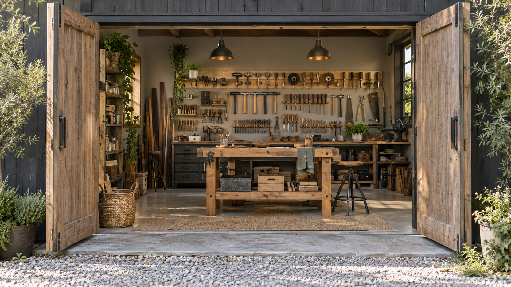

AI Цех · Поток 3 · Занятие 5 · 7 октября 2026 · Уфа
Свой цех
и своя бригада
Первая часть: OpenCode, открытый харнес, где модель выбираете сами. Вторая часть: субагенты, помощники, которых главный агент зовёт под задачу
Что унесёте сегодня
OpenCode на ваших правилах
Та же папка, те же правила, что у Claude и Кодекса. Модель выбираете под задачу и под деньги.
Кодекс на полную
Режим плана, цель, автопромтинг, хендофф. Агент сначала думает, потом сам идёт по кругу до результата.
Своя бригада помощников
Три способа звать субагентов и свои роли файлами, которые работают в Кодексе, Claude и OpenCode.
Маршрут урока
| Время | Блок | Что получаем |
|---|---|---|
| 19:00 | Сверка, харнес и модель | OpenCode открыт. Зачем он, три способа дать ему мозги, цены |
| 19:10 | OpenCode на ваших правилах | Промпты 0, 2а, 2б: агент знает вас |
| 19:20 | Какие модели брать | Одна задача на трёх моделях |
| 19:35 | Кодекс на полную | План, цель, автопромтинг, хендофф |
| 19:45 | Субагенты: что это | Чем помощник отличается от второго чата |
| 19:55 | Подход 1. Банда под задачу | Три проверяющих на ваше приложение |
| 20:15 | Подход 2. Параллельно | Помощник работает рядом, вы не ждёте |
| 20:25 | Подход 3. Свои на постоянку | Своя роль файлом, зовётся по имени |
| 20:55 | Домашка | Бригада под свою работу и функция в OpenCode |
Слова урока
| Слово | Что это |
|---|---|
| Харнес | Оболочка вокруг модели: даёт модели руки, то есть доступ к файлам, командам и интернету. Кодекс, Claude Code, OpenCode, Гермес |
| Модель | Мозг, который думает. Одна и та же модель в разных харнесах работает по-разному |
| API | Служебный вход программы, открывается ключом |
| Подписка | Фиксированная сумма в месяц и лимит запросов окнами по 5 часов |
| Субагент | Помощник, которого главный агент заводит под задачу и инструктирует сам |
| Роль | Файл с инструкцией помощника. Лежит на диске, зовётся по имени |
Часть первая · 45 минут
Свой цех:
OpenCode
Лимиты Claude и Кодекса кончились посреди работы. Раньше это значило сидеть и ждать. Теперь подключаете ту же папку к OpenCode и работаете дальше
Сверка: OpenCode открыт, папка ваша
Папка
Под полем ввода имя вашей папки. Нет: «Добавить проект» и та же папка, где работаете с Claude
Новая сессия
Ctrl+T или плюс вверху справа от вкладок
Агент
Первый список внизу: Build делает, Plan только обсуждает
Модель
Второй список: есть Go, берите модель из Go. Нет: любую с пометкой «Бесплатно»

Промпт 0 · OpenCode, ваша папка, новая сессия
Не открывай файлы. Ответь по-русски тремя строками: 1. Какая ты модель. 2. В какой папке мы сейчас работаем. 3. Какие навыки ты видишь, только названия.
Четыре харнеса курса, мозг под капотом разный
Claude и Кодекс
Каждый привязан к своему производителю: Claude к моделям Anthropic, Кодекс к моделям OpenAI.
OpenCode
Открытый харнес, никакой корпорации не принадлежит. Мозг подключаете любой.
Гермес
Агент 24/7 на сервере устроен так же: харнес ничей, модели под капотом любые. Три последних занятия про него.
Зачем вам свой цех
Работа не стоит
Лимиты Claude и Кодекса кончились: открыли ту же папку в OpenCode и продолжили.
Цена под задачу
Сильная модель думает один раз, дешёвая делает. Лимиты у дешёвых больше чем в сто раз.
Шаг к Гермесу
Научились подключать модели к открытому харнесу здесь. С Гермесом будет то же самое.
Три способа дать OpenCode мозги
| Способ | Что внутри | Как платим |
|---|---|---|
| Подписка Go | Открытые модели: GLM, DeepSeek, Kimi, Qwen | 10 долларов в месяц, лимит окнами по 5 часов |
| Подписка ChatGPT | Модели GPT, вход через ваш аккаунт | Та же подписка. Лимит общий с Кодексом |
| Ключ API любого провайдера | DeepSeek, OpenAI, Anthropic, Moonshot, Zhipu и ещё больше 75 | Платите за каждый запрос со счёта у провайдера |
Подписка или ключ API
Подписка
Фиксированная сумма в месяц и лимит запросов окнами по 5 часов. Удобно для ежедневной работы: не думаете о каждом запросе.
Ключ API
Платите за каждый запрос со своего счёта у провайдера. Удобно, когда нужна конкретная модель или агент работает сам, без вас, круглые сутки.
Сколько стоит мозг: цена по API
| Модель | Чья | Вход, $ | Выход, $ |
|---|---|---|---|
| DeepSeek V4.1 Flash | DeepSeek, Китай | 0,30 | 1,20 |
| GLM-5.3-Flash | Zhipu, Китай | 0,15 | 0,50 |
| GLM-5.3 | Zhipu, Китай | 1,40 | 4,40 |
| Kimi K3 | Moonshot, Китай | 3,00 | 15,00 |
| Qwen3.8 Max | Alibaba, Китай | 2,00 | 6,00 |
| GPT-6 Luna | OpenAI | 0,10 | 0,50 |
| GPT-6.1 Sol | OpenAI | 2,00 | 10,00 |
| GPT-6 Astra | OpenAI | 10,00 | 50,00 |
| Claude Sonnet 5 | Anthropic | 2,00 | 10,00 |
| Claude Opus 5.5 | Anthropic | 4,00 | 20,00 |
Показ: ключ API под капот OpenCode
Бизнес-кабинет компании
Открыты на экране: platform.deepseek.com (DeepSeek) и platform.openai.com (ChatGPT). Это кабинет для ключей, отдельно от обычного чата
Создать ключ
Раздел API keys, кнопка создать ключ. Пополнить баланс в кабинете
Подключить
В OpenCode «Подключить провайдера» (команда /connect), выбрать DeepSeek, вставить ключ
Погнали
Команда /models: модели DeepSeek в списке. Выбрали и работаем напрямую
Где лежит ключ
У вас на компьютере, в настройках OpenCode. В чат не кидаем, на записи экрана не показываем
Те же правила в OpenCode
AGENTS.md вашей папки
OpenCode читает его сам
Общий файл правил
Тот, что у Claude и Кодекса в папке .codex. OpenCode берёт его только из своей папки .config/opencode
Делаем копию
Промпт 2а: агент копирует файл слово в слово
Проверяем
Промпт 2б в новой сессии: в ответе два файла правил

Промпт 2а · та же сессия
Сделай так, чтобы в OpenCode действовали мои общие правила из того же файла, что у Claude и Кодекса: AGENTS.md в папке .codex в моей домашней папке. OpenCode берёт общие правила только из файла AGENTS.md в папке .config/opencode в моей домашней папке. Скопируй туда мой файл правил целиком, слово в слово. Папки нет, создай. Сам файл правил в .codex не меняй. В конце одной строкой скажи, что сделал. Отвечай по-русски.
Промпт 2б · новая сессия, Ctrl+T
Не открывай файлы. Из каких файлов правил у тебя сейчас инструкции? Назови путь каждого файла и одной строкой, что в нём главное про меня. Отвечай по-русски.
Какие модели брать: подписка Go на 6 октября
| Модель | Для чего | Лимит за 5 ч |
|---|---|---|
| GLM-5.3 | Планирует: разбор задачи, карточка логики. Сильная и не самая дорогая | ~220 |
| DeepSeek V4.1 Flash | Делает: логика и правки по готовому плану. Дешёвая, лимит огромный | ~26 000 |
| Kimi K3, Qwen3.8 Max | Самое сложное. Запросов мало | 110–160 |
| GLM-5.3-Flash | Запасной планировщик и мелкие правки | ~6 300 |
| Space Bunny Free, LongCat 2.5 Preview Free | Бесплатный запас без подписки. Временные, могут пропасть | бесплатно |
Правило: сильная думает, дешёвая делает
запросов за 5 часов у GLM-5.3. Сильная модель планирует один раз
у DeepSeek V4.1 Flash. Дешёвая делает по готовому плану
и больше разница в лимите. Та же схема, что в Кодексе: сильная планирует, рабочая делает
Одна задача, три модели · три новые сессии
Возьми эту задачу и прогони её как есть: прочитай prilozhenie/plan.md, prilozhenie/ЗАКАЗ-НА-ПРОЕКТ.md и prilozhenie/index.html и предложи три самых полезных улучшения логики моего приложения: из раздела «Куда растём» или то, что мешает пользоваться каждый день. По каждому: что сделать, зачем это мне, насколько сложно. Ничего не меняй. В конце одной строкой: какая модель сейчас стоит и сколько примерно ушло на этот запрос. Отвечай мне по-русски, без английского.
Прогон Данила на бесплатных моделях
| Модель | Время | Что вышло |
|---|---|---|
| Muse Spark 1.3 | 32 сек | Три улучшения по делу, коротко, по-русски, честно: «расход мне не виден» |
| Big Pickle | 3 мин 20 сек | По сути то же, но в шесть раз дольше: гонял лишние команды, ответ с английскими словами |
| Nemotron 3 Ultra | 55 сек | Таблица, много английского и выдуманная цена «0,002 $» при бесплатной модели |
Сколько стоило на самом деле
Не у модели
Модель свою цену не знает и может уверенно выдумать сумму.
В кабинете
Сколько списалось, видно только в кабинете opencode.ai, у ключей в кабинете провайдера.
Под задачу
Смотрите расход на каждую пару «думает, делает». Так видно, что вам выгоднее.
Практика: одна задача на трёх моделях
Промпт 3 в трёх новых сессиях OpenCode (Ctrl+T), у каждой своя модель. Сравните: по делу ли, по-русски ли, сколько ждали.
Кодекс на полную · 10 минут
План, цель,
автопромтинг, хендофф
Четыре приёма, после которых агент сначала думает, сам идёт по кругу до результата, а работа не теряется между окнами. Возвращаемся в Кодекс
Четыре приёма сильной работы
| Приём | Как включить | Что делает |
|---|---|---|
| Режим плана | /plan в строке Кодекса | Агент сначала расписывает план и задаёт вопросы. Файлы не трогает |
| Цель | /goal и сама цель | Агент сам идёт по кругу «сделал, проверил, починил», пока не достигнет цели или не упрётся в лимит |
| Автопромтинг | Навык Данила, показывает он | Из вашей сырой мысли агент пишет полное задание и показывает его. Сам ничего не делает, ждёт ваше «да», потом планирует и делает |
| Хендофф | «Сделай хендофф» | Агент сохраняет в файл HANDOFF.md, где остановились. В новом окне работа продолжается по этому файлу |
Чем отличаются: план, Superpowers, автопромтинг
| Что | Что это | Когда брать |
|---|---|---|
| Режим плана | Кнопка самого Кодекса | Перед любой задачей больше одного шага |
| Superpowers | Плагин: набор навыков на весь путь, от вопросов и плана до проверки | Большая задача, где важен порядок работы |
| Автопромтинг | Навык: регламент одной операции, из сырой мысли полное задание. Сам ничего не делает, ждёт «да» | Знаете, что хотите, но не знаете, как сказать агенту |
Показ: план, потом цель · Кодекс, ваша рабочая папка
/plan Хочу добавить в своё приложение в папке prilozhenie одну функцию из раздела «Куда растём» в prilozhenie/ЗАКАЗ-НА-ПРОЕКТ.md. Выбери ту, которой в приложении ещё нет, и назови её. Перескажи своими словами, что будет делать функция, и задай мне не больше трёх вопросов, к каждому дай свой вариант ответа. Потом распиши план по шагам и как проверить результат по разделу «Готово, когда». Файлы пока не меняй. …ответы на вопросы, «да» на план… /goal Сделай функцию по нашему плану в папке prilozhenie. Готово, когда каждый пункт «Готово, когда» из плана проверен и прошёл, а старые кнопки работают как раньше. Меняй только то, что нужно для этой функции. В конце покажи таблицу: что проверил, как, результат.
Фишка Данила: хендофф
«Сделай хендофф»
Пишете в чат. Агент сохраняет в файл HANDOFF.md, где остановились: цель, что сделано, какие решения приняты, что дальше
Новое окно
Новый чат в Кодексе, Claude или OpenCode, та же папка
«Хендофф: продолжай по HANDOFF.md»
Агент читает файл и ведёт работу дальше без вашей старой переписки
Часть вторая · 70 минут
Своя бригада:
субагенты
Один агент хорошо, а бригада лучше. Главный агент раздаёт задания помощникам и собирает один ответ. Это первый шаг к автономному агенту
Одна голова не проверяет сама себя
Пишущий
Делает работу. Своей работой доволен всегда: это не вредность, так он устроен.
Проверяющий
Отдельный помощник со своими указаниями. По умолчанию отклоняет: чтобы получить «да», нужно показать доказательство.
Субагент: отдельный помощник со своей головой
Своя голова
Не видит вашу переписку и не знает, почему вы что-то решили. Поэтому замечает то, что замылилось.
Своя специальность
Один смотрит вёрстку, другой тексты, третий ищет по проекту. Узкий видит лучше универсала.
Заводит главный
Вы говорите, кто нужен. Агент сам инструктирует помощника и собирает ответ, как бригадир.
Свой расход
Каждый помощник тратит ваш лимит отдельно. Зовут под задачу, а не на всякий случай.
Субагент и команда агентов: не путаем
Субагент
Работает внутри вашего чата. Главный агент раздаёт задания и собирает ответы. Вы помощнику не пишете, во время работы модель ему не поменять. Заранее модель задаётся строкой model в роли.
Команда агентов
Несколько полноценных окон. Каждому можно написать лично и поменять модель, они переписываются между собой. Сейчас это работает через терминал.
Три способа звать помощников
Банда под задачу
Агент сам называет, какие помощники нужны, создаёт их, раздаёт работу и собирает один ответ
Параллельно
Задача уже идёт, а нужно ещё что-то. Просите отдельного помощника, и обе задачи идут рядом
Свои на постоянку
Роли под вашу рутину лежат файлами на диске и зовутся по имени. Растут от ваших замечаний
Где это в Кодексе и в Claude
| Кодекс | Claude | |
|---|---|---|
| Где лежат роли | ~/.codex/agents/, файл .toml | ~/.claude/agents/, файл .md |
| Обязательные поля | name, description, developer_instructions | name, description и текст под шапкой |
| Как позвать | Фразой или через @ и имя | Фразой или через @ и имя |
| Встроенные помощники | default, worker, explorer | Explore, Plan, general-purpose |
| Где смотреть работу | Панель «Субагенты»: Active и Done | Панель фоновых задач: агент, модель, токены |
| Модель помощника | Строка model в роли | Строка model в роли |
Сколько это стоит
токенов съел один вызов помощника в Кодексе. Замер второго потока Цеха
токенов у короткого помощника в Claude на Sonnet 5.5. Замер Данила 07.10
расход у шести помощников против двух, а польза почти та же. Замер второго потока Цеха
Как не остаться без лимита
Под задачу
Мелкий вопрос обычный чат закроет сам.
Узкий кусок
Конкретный файл или папка, а не весь проект.
Дешёвая модель
Помощникам лёгкую модель строкой model. Думает дорогая, бегает дешёвая.
Сначала спросить
«Скольких позовёшь и куда?» и только потом «давай».
Подход 1 · Банда под задачу
Называет сам
Вы описываете задачу, агент говорит, какие помощники нужны и зачем.
Раздаёт работу
После вашего «давай» создаёт их и отправляет каждого на свой кусок.
Собирает один ответ
Он оркестратор: все результаты приходят к нему, вам один общий список.
Промпт П1 · Кодекс, ваша рабочая папка, новый чат
У меня задача: проверить моё приложение в папке prilozhenie перед тем, как показывать его людям. Сверяй с разделом «Готово, когда» в prilozhenie/ЗАКАЗ-НА-ПРОЕКТ.md. Скажи, какие помощники нужны, чтобы проверить его надёжно и чтобы они друг друга страховали. Не больше трёх. Назови каждого и одной строкой объясни, зачем он. Дождись моего «давай». Потом создай этих помощников и расскажи, кто куда пойдёт и что принесёт. Помощники только читают и ничего не правят. Им ставь лёгкую модель, сам думай на обычной. Ты оркестратор: все результаты приходят к тебе. Собери один общий ответ: 1. Что чинить в первую очередь, не больше пяти пунктов. 2. Остальное списком. 3. Где помощники сказали разное, покажи отдельно и не выбирай за меня. Одинаковые замечания склей в одно. Сам пока ничего не правь.
Практика: три проверяющих на ваше приложение
Промпт П1 в Кодексе, ваша рабочая папка (где лежит prilozhenie), новый чат. Прочитайте, кого агент зовёт, и напишите «давай». Пока работают, откройте панель «Субагенты».
Подход 2 · Параллельно
Задача идёт
Агент занят. Напишете новую задачу в тот же чат, и он бросит текущую.
Отдельный помощник
Просите создать помощника под новое дело. Текущая работа не прерывается.
Две задачи рядом
Одна в главном чате, вторая у помощника. Вы делегировали и вернулись к своему.
Видно всё
Панель «Субагенты»: кто работает, кто закончил.
Сначала работа главному · тот же чат после П1
Почини первые два пункта из общего списка помощников. Чини минимально, остальное не трогай. После каждой правки проверь, что старые кнопки работают как раньше.
Промпт П2 · тот же чат, пока агент чинит
Текущую задачу не бросай и не меняй. Создай отдельного помощника, пусть параллельно займётся вот этим: найди в интернете три похожих приложения под мою задачу из prilozhenie/ЗАКАЗ-НА-ПРОЕКТ.md и выпиши, какие функции есть у них и нет у меня. Помощник только ищет и читает, ничего не правит. Когда закончит, покажи мне его результат отдельно от текущей работы.
Практика: две задачи рядом
В том же чате после П1: «Почини два пункта», и пока агент чинит, промпт П2. Откройте панель «Субагенты» и найдите помощника.
Подход 3 · 20 минут
Свои
на постоянку
Роль это файл на диске. Вы говорите словами, Кодекс пишет файл. Зовёте по имени в любом проекте. Ошиблась: дописываете строку
Роль: файл на диске
| Что | Как |
|---|---|
| Личные роли | ~/.codex/agents/: работают в любом вашем проекте |
| Роли одного проекта | Папка .codex/agents/ внутри папки проекта |
| name | Имя роли латиницей, через дефис |
| description | Одна фраза: когда эту роль звать. По ней Кодекс понимает, кого вы позвали |
| developer_instructions | Сами указания по-русски: что смотреть, чего не трогать, как отвечать |
| sandbox_mode = "read-only" | Роль только читает. Ставим всем проверяющим |
| model | Лёгкая модель для помощника. Необязательно |
Так выглядит роль: проверяющий по дизайну
# ~/.codex/agents/design-checker.toml name = "design-checker" description = "Проверяет вёрстку и внешний вид: отступы, шрифты, контраст, вид на телефоне. Ничего не правит, только пишет список замечаний." sandbox_mode = "read-only" developer_instructions = """ Ты придирчивый проверяющий по дизайну. Отклоняй по умолчанию: пока не нашёл ни одного замечания, ищи дальше, а не хвали. Смотришь по порядку: телефон 375 пикселей, отступы, шрифты, контраст, кнопки. Первая строка ответа: годится или не годится. Дальше список: файл и строка, что не так, что поставить вместо этого. Файлы не меняешь. Хвалить не твоя работа. """
Промпт П3 · Сделай роль из моих слов
Сделай мне помощника для Кодекса: отдельную роль файлом .toml. Вот чего я хочу от него, своими словами: [опишите обычными словами: кто это, что он проверяет или делает, на что смотрит в первую очередь, что для вас «плохо», в каком виде вы хотите получать ответ] Собери роль по этим правилам: 1. Сначала задай мне не больше трёх вопросов, только то, без чего роль выйдет размытой. Дальше не спрашивай, а делай. 2. Формат .toml. Поля: name (латиницей, через дефис), description (одно предложение: когда эту роль звать), model = "gpt-6-luna" (дешёвая модель), sandbox_mode, developer_instructions. 3. developer_instructions пиши по-русски, обращайся к роли на «ты». Внутри: одна строка «кто ты», дальше нумерованный список: что смотреть и в каком порядке, дальше: в каком виде отвечать. 4. Каждый пункт должен быть проверяемым. Не «следи за качеством», а «больше четырёх размеров шрифта: замечание». Пустые строки выкидывай. 5. Если роль только смотрит и ничего не меняет, поставь sandbox_mode = "read-only" и напиши в инструкции прямым текстом, что файлы она не трогает. 6. Не бери имя default, worker или explorer: это встроенные роли Кодекса. 7. Положи файл в ~/.codex/agents/ и скажи мне одной строкой: как роль называется и как её теперь звать. Потом сразу проверь её: позови эту роль на папку prilozhenie и покажи мне, что она ответила. Если ответ вышел общий и бесполезный, скажи, какую строку в роли надо поправить.
Кого заводят чаще всего: двенадцать помощников
Практика: свой помощник на постоянку
Промпт П3: опишите словами помощника под своё приложение. Ответьте на вопросы Кодекса. Потом новый чат и позовите его сами: «позови [имя роли] на папку prilozhenie» или @ и имя роли.
Ошиблась: дописываем одну строку
Помощник [имя роли] сегодня промахнулся: [что он пропустил или сделал не так]. Роль заново не переписывай. Открой ~/.codex/agents/[имя].toml и допиши в developer_instructions один короткий пункт, который закрывает именно этот случай. Формулируй проверяемо: не «будь внимательнее», а конкретное условие, при котором роль обязана поставить замечание. Покажи мне строку «было» и строку «стало». Остальные пункты не трогай. Потом позови роль ещё раз на ту же папку и покажи, изменился ли ответ.
Та же роль в Claude и в OpenCode
Claude
Файл ~/.claude/agents/имя.md, шапка name и description, ниже инструкция. Позвать: @ и имя.
OpenCode
Файл ~/.config/opencode/agents/имя.md, в шапке description и mode: subagent. Позвать: @ и имя.
Перенос
Одной просьбой к агенту, руками не переписываем. Промпт «Перенеси роль» в шпаргалке.
Если не так
| Что видите | Что делать |
|---|---|
| Роль не зовётся | Промпт «Какие у меня помощники» из шпаргалки: файл, расширение, три поля, имя |
| Позвали через @, а роли нет в списке | Роли читаются при старте: начните новый чат |
| Помощник начал править файлы | Нет строки sandbox_mode = "read-only": попросите дописать |
| Попросили «проверь», а агент сделал сам | Зовите по имени: «позови проверяющего по дизайну» |
| Пишет, что помощников запустить не удалось | Новый чат: слоты освободятся |
| Лимит кончился | Звали шестерых там, где хватало одного. Смотрите у ведущего |
| Кодекс задаёт вопросы окном | На ответ около 30 секунд: отвечайте сразу |
| Выскочило «Точно удалить?» | Жмите «Отмена» |
Домашка
1. Своя бригада
Три готовые роли из шпаргалки, интервью «каких помощников не хватает мне» и сборка своих.
2. Функция в OpenCode
План на сильной модели, код на дешёвой, минута руками, выкладка по той же ссылке.
Что прислать
Список своих помощников и что поймал один из них. Ссылку на приложение, скрин таблицы самопроверки и строку «план на такой-то модели, код на такой-то, списалось столько-то».
Куда и когда
Тема «Общение», до понедельника 12 октября, 19:00.

Формула урока
Модель выбираю я.
Работу делит бригада
Сильная думает, дешёвая делает. Пишет один, проверяет другой. Помощника зовут под задачу
Запас · если останется время
Дизайн:
Open Design и Claude Design
Два холста, где агент рисует экраны, презентации и одностраничники и отдаёт готовые файлы, а не текст в чате
Что показываем
Open Design
open-design.ai, репозиторий nexu-io/open-design. Бесплатно, работает поверх Кодекса, отдаёт HTML, PDF, PPTX. Ставится просьбой к агенту.
Claude Design
Холст дизайна в подписке Claude: слева чат, справа живой макет. Берёт стиль и структуру, передаёт готовое в Claude Code.
Ваши приложения
Вид из домашки урока 4 переносится тем же путём: образец, стиль, проверка, что кнопки работают.